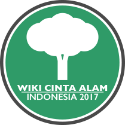

Wiki Cinta Alam Indonesia (WCAI)
(Wiki Loves Earth - Indonesia)
adalah sebuah kontes fotografi keindahan alam, bisa berupa bentang alam, flora maupun fauna di Indonesia secara daring (online) selama 30 hari di situs Wikimedia Commons.
adalah sebuah kontes fotografi keindahan alam, bisa berupa bentang alam, flora maupun fauna di Indonesia secara daring (online) selama 30 hari di situs Wikimedia Commons.

Wikimedia Commons adalah salah satu proyek dari Wikimedia Foundation yang mengelola Wikipedia dan merupakan sebuah situs web berisikan koleksi media (baik foto, video, maupun audio) yang berlisensi bebas (Creative Commons) dan dapat digunakan dan ditambahkan oleh siapa saja.
Perlombaan ini merupakan versi lokal dari Wiki Loves Earth, perlombaan foto internasional tahunan yang bertujuan untuk menjaring beragam foto bentang alam yang berlisensi bebas. Foto pemenang utama Wiki Cinta Alam Indonesia akan diikutsertakan dalam kompetisi Wiki Loves Earth International pada bulan Juli 2017.
Tujuan dari kompetisi ini adalah untuk menambah jumlah foto bentang alam Indonesia yang bebas hak cipta dan dapat dipergunakan secara bebas sehingga foto-foto tersebut dapat digunakan untuk melengkapi halaman artikel di WIkipedia Bahasa Indonesia maupun bahasa daerah lainnya di Indonesia (seperti Jawa, Sunda, Banjar, Minang, dan lainnya). Untuk itu, peserta dipersilakan mengunggah sebanyak-banyaknya foto hasil karya mereka ke Wikimedia Commons. Selain itu, kompetisi ini juga bermaksud untuk meningkatkan kesadaran untuk melestarikan alam Indonesia.
Tiga orang pemenang terbaik akan mendapatkan hadiah menarik dengan nilai sebagai berikut:

merupakan fotografer National Geographic Indonesia, dan merupakan alumni dari Politeknik Caltex Riau. Selain wara-wiri di dunia perfotografian, Yunaidi juga rajin menulis di situs pribadinya ranselkosong.com
merupakan mahasiswa S3 di Universitas Gadjah Mada, Yogyakarta. Selama lebih dari sepuluh tahun dia berkontribusi di Wikipedia bahasa Inggris dan Wikimedia Commons. Dia sudah menulis lebih dari 700 artikel tentang Indonesia, dan menyumbangkan ratusan foto dan ribuan hasil pindaian.

merupakan ekolog Satwa Liar dan Bentang Alam WWF Indonesia. Yunaidi merupakan sarjana program studi Biologi, Universitas Indonesia serta mengambil program PhD bidang Wildlife Sciences, Virginia Tech, Amerika Serikat

Berikut adalah ketentuan kompetisi yang harus ditaati dalam kompetisi WCAI
Peserta memilki akun atau membuat akun baru di Wikimedia Commons
Foto merupakan hasil karya sendiri. Foto yang diunggah oleh orang lain meskipun dengan izin akan didiskualifikasi.
Foto berupa pemandangan alam, taman nasional, dan/atau flora atau fauna di Indonesia dan tidak mengandung unsur struktur permanen buatan (gedung, patung, monumen, dan lainnya)
Peserta harus mengunggah sendiri foto ke situs Wikimedia Commons selama kompetisi berlangsung (1 Juni - 30 Juni 2017). Foto yang dibuat sebelum masa kompetisi tetap dapat diikutsertakan selama diunggah ulang dalam periode tersebut.
Foto yang diunggah harus berlisensi bebas (CC-BY atau CC BY-SA 4.0).
Foto tidak diperkenankan memuat tanda air (watermark).
Resolusi foto yang diunggah minimal 2 megapiksel (MP).
Setiap foto yang diunggah harus dilengkapi dengan deskripsi singkat dan kategori yang sesuai.
Setiap berkas foto yang diunggah harus memuat Kategori:WCAI2017.
Tidak ada batasan jumlah foto yang dapat diunggah oleh peserta.

Penafian: Keputusan dewan juri tidak dapat diganggu gugat